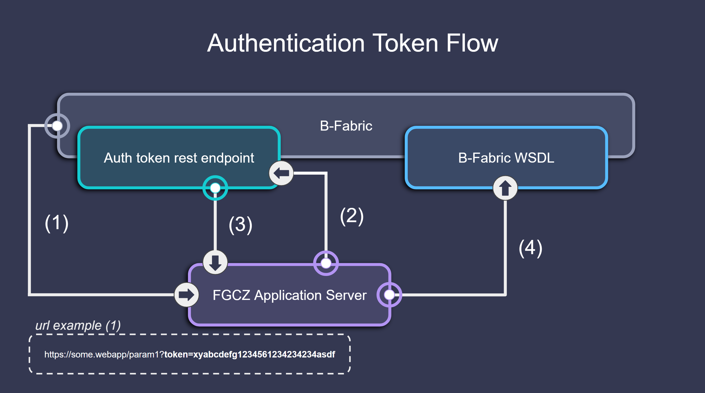

Important Components#
This section introduces the most important components when working with the bfabric_web_apps library. It begins by explaining the authentication and token handling process. Next, it covers the information that is extracted from the token, such as app_data, entity_data, and token_data. Finally, it presents an important out-of-the-box UI component: the Charge Switch, which enables users to manage cost attribution within their B-Fabric workflows.
Authentication & Token Handling#
The B-Fabric authentication system ensures secure access to web applications and links each session to specific data, users and entities.

Flow Overview#
Token sent via URL A user accesses the app with a B-Fabric token included as a URL parameter. Example:
https://some.webapp/param1?token=abcxyz123Web app validates the token The app uses a REST API call to the B-Fabric backend to confirm the validity of the token.
B-Fabric responds If the token is valid, the backend returns a JSON payload with metadata about the user, app, and linked dataset.
Web app uses the credentials The app extracts relevant data from the response to configure the session, display context-specific information, and pre-fill app components.
The process_url_and_token() function is a central utility used in almost every app built with bfabric_web_apps. It extracts the token from the URL and transforms the backend response into structured dictionaries that are reused across callbacks.
process_url_and_token(url_params)
The function returns the following elements:
(token, token_data, entity_data, app_data, page_title, session_details, job_link)
Among these, the most important for downstream app logic are the dictionaries: token_data, entity_data, and app_data. These are explained in detail in the next section.
Extracted Key Dictionaries#
App Data#
What is it? App data contains metadata related to the specific B-Fabric application currently running in the session.
Structure Overview:
Key |
Description |
|---|---|
|
App ID in B-Fabric |
|
App name |
|
A brief explanation of the app’s purpose |
Example:
app_data = {
'id': 543,
'name': 'RNAseq',
'description': 'A web application designed to run the nf-core RNA-seq pipeline.'
}
Entity Data#
What is it?
entity_data represents the full metadata of a dataset retrieved from B-Fabric. It contains general dataset metadata (creator, timestamps, ID), schema definitions (attributes), associated files, links to other B-Fabric objects, and a detailed item-level structure. This data is typically the basis for what the app will visualize, process, or submit as a job.
Structure Overview:
Key |
Description |
|---|---|
|
Human-readable name/title of the dataset. |
|
Username of the user who originally uploaded or created the dataset. |
|
Timestamp when the dataset was first created. |
|
Timestamp of the most recent modification. |
|
The full response returned from the B-Fabric webservice when querying the entity class with the ID obtained from token decryption. |
Example:
entity_data = {
'name': 'Uploaded FASTQ Dataset (Run 1913)',
'createdby': 'lopitz',
'created': '2013-03-28 13:27:49',
'modified': '2025-04-16 13:01:14',
'full_api_response': {
'modifiedby': 'gfeeder',
'classname': 'dataset',
'id': 2220,
'container': {'classname': 'project', 'id': 703},
'attribute': [
{'name': 'Sample', 'position': '1', 'type': 'String'},
{'name': 'FASTQ Read 1', 'position': '2', 'type': 'Resource'},
{'name': 'FASTQ Read 2', 'position': '3', 'type': 'Resource'},
{'name': 'Strandedness', 'position': '4', 'type': 'String'}
],
'item': [
{
'position': '1',
'field': [
{'attributeposition': '1', 'value': 'Run_1913_10'},
{'attributeposition': '2', 'value': '/path/to/R1_001.fastq.gz'},
{'attributeposition': '3', 'value': '/path/to/R2_001.fastq.gz'},
{'attributeposition': '4', 'value': 'auto'}
]
},
# Additional sample rows...
],
'numberofattributes': '4',
'numberofitems': '6',
'link': [
{'classname': 'link', 'id': 84502},
{'classname': 'link', 'id': 84503},
# Additional links...
]
}
}
Token Data#
What is it? Token data includes session-specific metadata like the authenticated user, app ID, dataset ID, and token expiry time.
Structure Overview:
Key |
Description |
|---|---|
|
Deployment environment (e.g., Test, Production) |
|
Username associated with the token |
|
Expiry timestamp of the session token |
|
ID of the selected entity (usually a dataset) |
|
Type of the entity (e.g., |
|
Base URL of the B-Fabric server |
|
App ID |
|
Optional app parameters |
|
Web service password (for programmatic access) |
|
Linked job ID, if any |
Example:
token_data = {
'environment': 'Test',
'user_data': 'appdeveloper',
'token_expires': '2025-05-01 22:54:56',
'entity_id_data': '2220',
'entityClass_data': 'Dataset',
'webbase_data': 'https://fgcz-bfabric-test.uzh.ch/bfabric',
'application_params_data': {},
'application_data': '543',
'userWsPassword': 'dummypassword',
'jobId': '2010'
}
Charge Switch#
What Is It?#
The Charge Switch is a predefined UI component that allows users to control whether the cost of running a job should be charged to a specific B-Fabric container. It integrates seamlessly into your Dash app and connects with the run_main_job function to enable or disable automatic service charging.
This is especially useful in shared computing environments where resource usage must be tracked and billed to the correct entity.
How It Works#
When toggled on, the switch returns
True, indicating that the job execution should be charged.When toggled off, it returns
False, and no charge will be made.The switch is connected to a callback via
State("charge_run", "on")and is typically used in conjunction with a project ID to populate thechargelist.
Return Value#
The charge switch returns a Boolean value (True or False), which you can access in a callback using:
State("charge_run", "on")
This Boolean value determines whether the computation should be billed.
Usage in a Callback#
You can use the return value to conditionally create a list of container IDs to be charged. If charge_run = False, the charge list will be empty. If it is True, it will be a list populated with the corresponding project_id.
if charge_run and project_id:
charge = [project_id]
else:
charge = []
This list is then passed to the run_main_job function as the charge parameter.
Example#
Passing the Charge Parameter to run_main_job() via Redis.
q(queue).enqueue(run_main_job, kwargs={
"files_as_byte_strings": files_as_byte_strings,
"bash_commands": bash_commands,
"resource_paths": resource_paths,
"attachment_paths": attachment_paths,
"token": url_params,
"service_id": bfabric_web_apps.SERVICE_ID,
"charge": charge # Populated using the switch
})
If the switch is off, charge will be an empty list ([]), and no billing occurs. If the switch is on and a valid project_id is available, the execution will be billed accordingly.
Reference Projects#
To see and understand how the charge switch can be easily implemented into your project, please refer to the Full-Featured Template or the Redis Template.
Summary#
Feature |
Description |
|---|---|
Component ID |
|
Return Value |
|
Purpose |
Allows end users to choose whether or not to charge the current execution |
Integration Target |
|